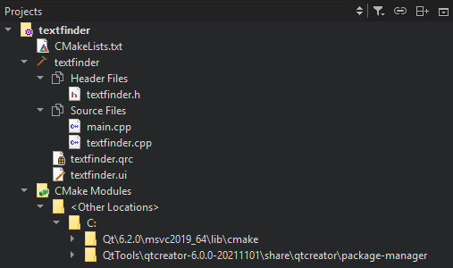
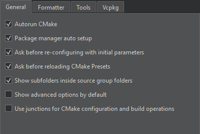

View CMake project contents
The Projects view visualizes the build system structure of the project as a tree and lists all files that are part of the project. Qt Creator automatically runs CMake to refresh project information in the view when you edit a CMakeLists.txt configuration file in a project. Project information is also automatically refreshed when you build the project.

To disable this behavior, go to Preferences > CMake > General and clear Autorun CMake.

Re-configure CMake projects
If Qt Creator cannot load the CMake project, the Projects view shows a <File System> project node to avoid scanning the file system and load the project faster. The node shows the same files as the File System view.
To re-configure the project:
- Select Build > Clear CMake Configuration.
- Select Build > Run CMake.
Hide subfolder names in Projects view
The Projects view shows the names of the subfolders where the source files are located. To hide the subfolder names and arrange the files only according to their source group, select Preferences > CMake > General, and then deselect the Show subfolders inside source group folders check box. The change takes effect after you select Build > Run CMake.
See also How To: Build with CMake, CMake, Open projects, File System, and Projects.